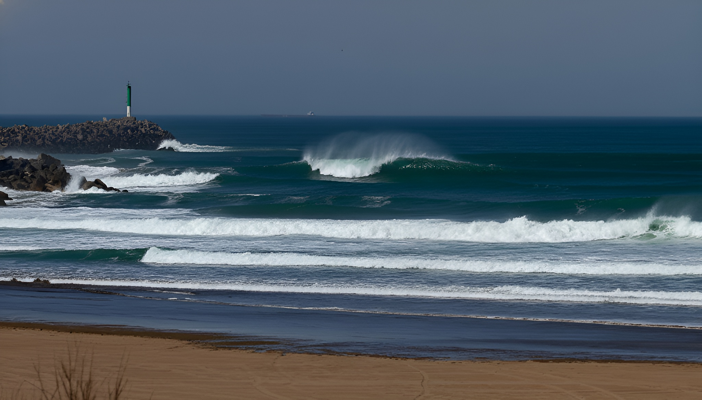
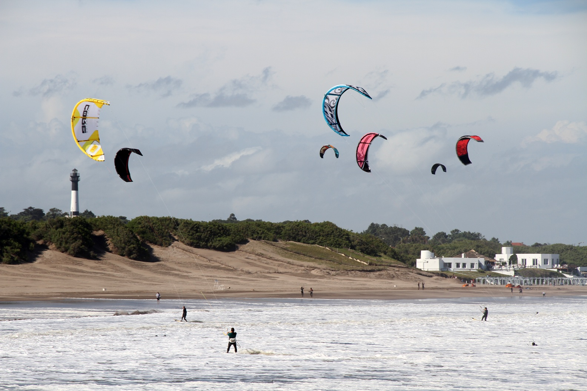
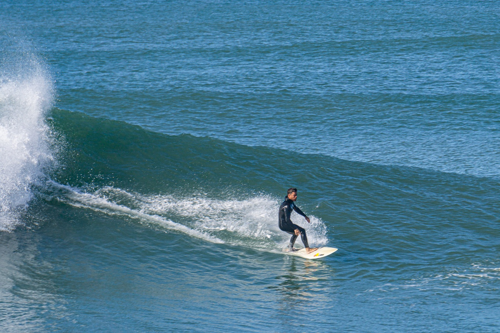
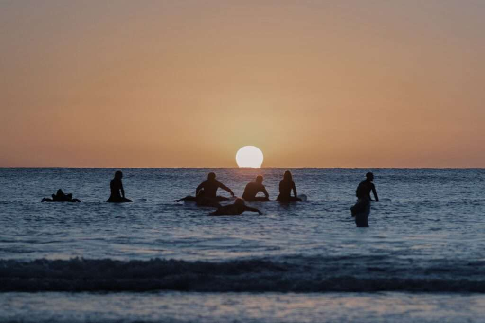

Escuelas
Si querés aprender a surfear, estas son algunas de las escuelas que ofrecen clases en la zona:
En esta página vas a encontrar información sobre los prinicipáles spots de surf en Necochea y Quequén. Vamos a hablar sobre las características de cada uno, el tipo de olas que ofrecen, y para qué nivel de surfistas son más adecuados.
Si querés aprender a surfear, estas son algunas de las escuelas que ofrecen clases en la zona:
La Escollera es uno de los spots de surf más conocidos de la zona y también uno de los más representativos de Necochea. Se encuentra en el origen de la escollera sur que puede dar olas muy buenas cuando las condiciones acompañan.
Es gracias a la interacción de la escollera con el mar que se forma un banco de arena, que a su vez genera una rompiente con olas de hasta 3m de altura. Estas características lo convierten en un spot ideal para surfistas con experiencia que quieren probar olas con más fuerza.

Si queremos vivir la experiencia de surfear en Quequén, uno de los spots más frecuentados por los amantes del surf es Monte Pasubio. Se caracteriza por ser un lugar calmo con olas que pueden llegar a los 2mts de altura. Además es considerado por muchos como la mejor playa de la zona.
La geografía de la costa de Quequén fue moldeada por la escollera que se encuentra cerca de Monte Pasubio, otorgándole a los surfistas olas bastante estables que son perfectas para aquellos que quieren iniciarse en el deporte

Otros de los spots clásicos es "El Caño". Es de los mas nombrados cuando se habla de surf en Necochea, se puede encontrar en la zona entre avenida 2 y Pinolandia y en verano cuenta con guardavidas.
Es un spot muy elegido ya que, si se dan las condiciones, se pueden presentar olas rápidas de alrededor de 2 metros de altura. En épocas mas frias y ventosas los surfistas mas experimentados pueden disfrutar de sesiones intensas y desafiantes, lo que lo convierte en un lugar apto tanto para iniciados como avanzados.

Si seguimos bajando hacia el sur, nos vamos a encontrar con un lugar ideal para aquellos que quieren un paisaje hermoso y tranquilo, lejos de las playas del centro. Karamawi es un spot alejado con un paisaje caracterizado por su naturaleza barrancosa. No presenta olas tan grandes ni rápidas, sino una experiencia mas relajada para aquellos que quieren disfrutar el surf sin tanta adrenalina.
